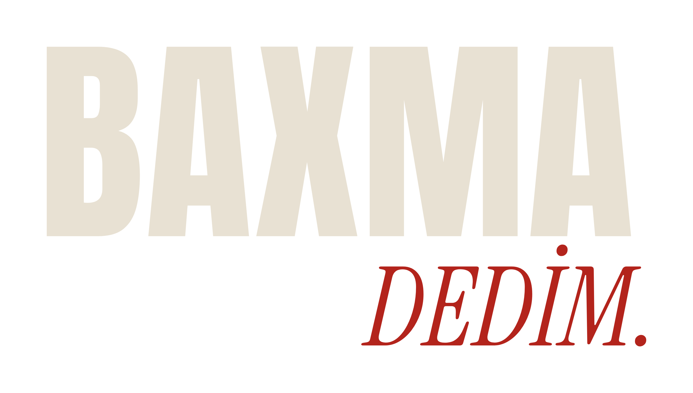
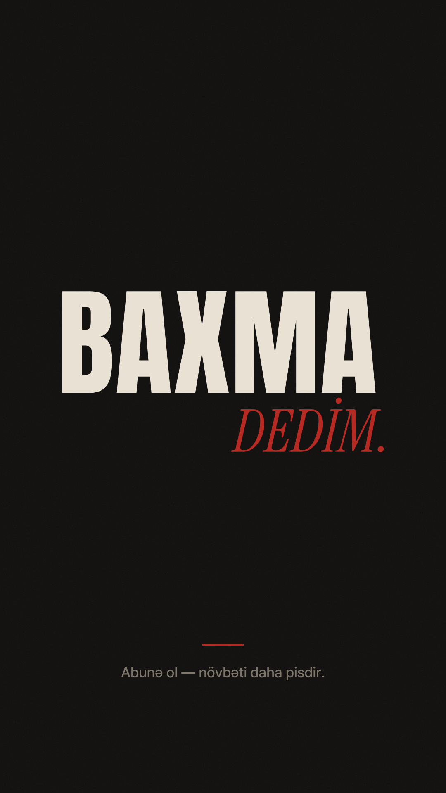
An oversized BAXMA shouts the warning, and the small red DEDİM. sits just off its edge like the quiet correction that came a second too late.
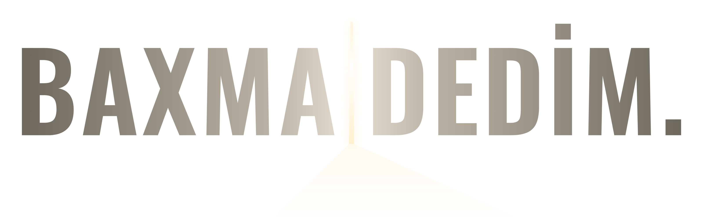
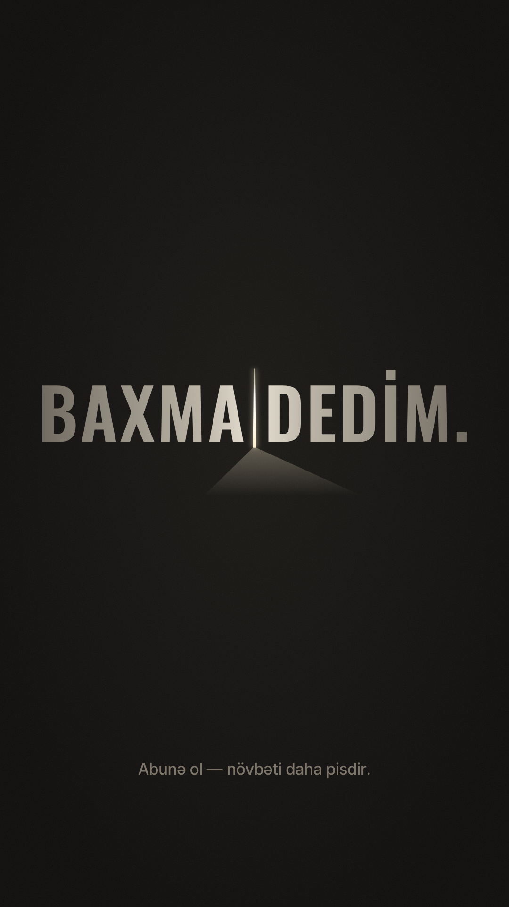
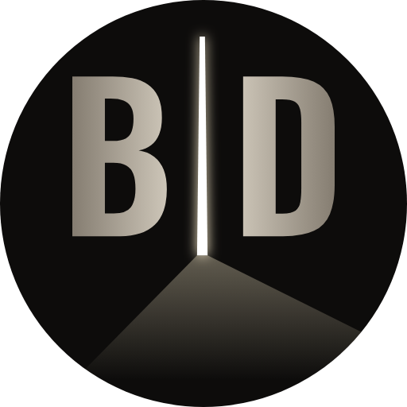
A thin strip of light between the two words turns the space into a door left slightly open, so the name is lit only where you shouldn't be looking.
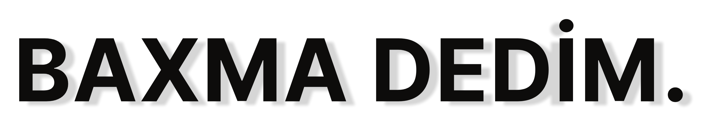
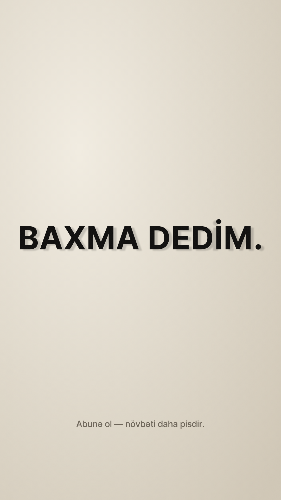
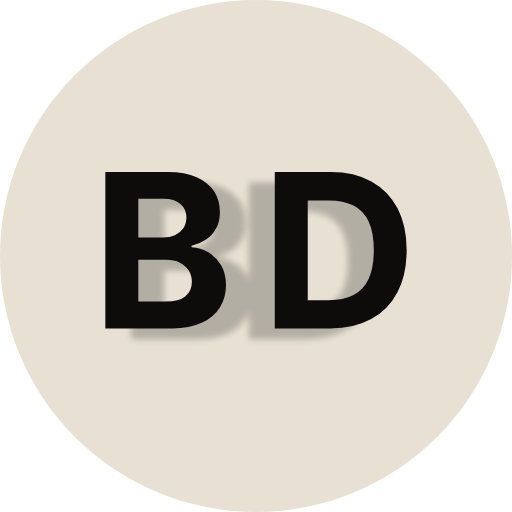
A calm, precise wordmark where every letter's shadow agrees except the İ's, which falls toward the light. Once you see it, you can't stop seeing it.
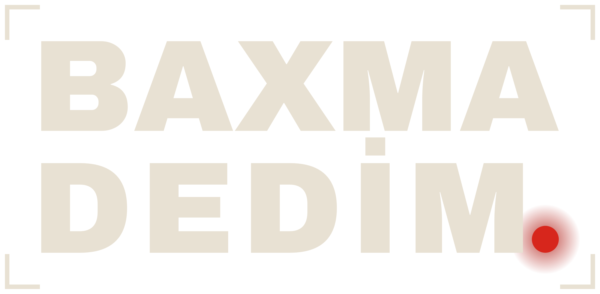
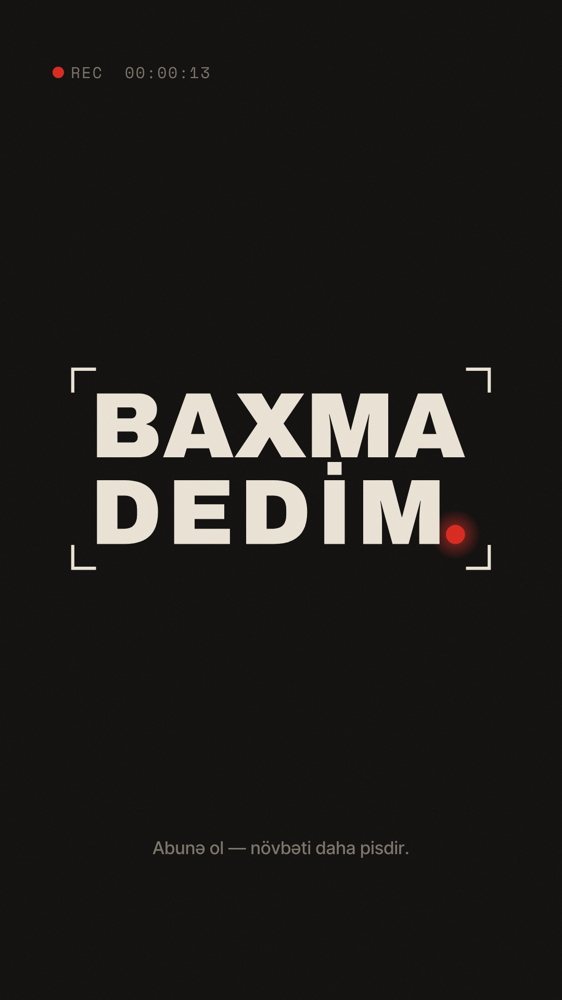
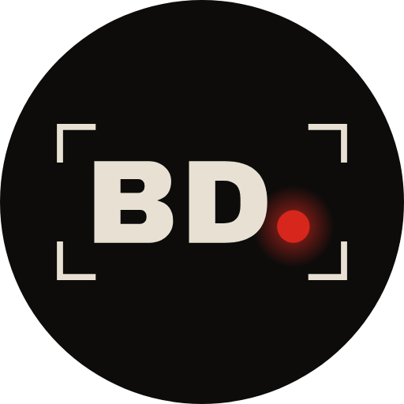
The period becomes a live REC light inside a viewfinder, a compact block that says the warning came too late because you're already being recorded.
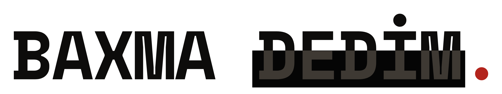
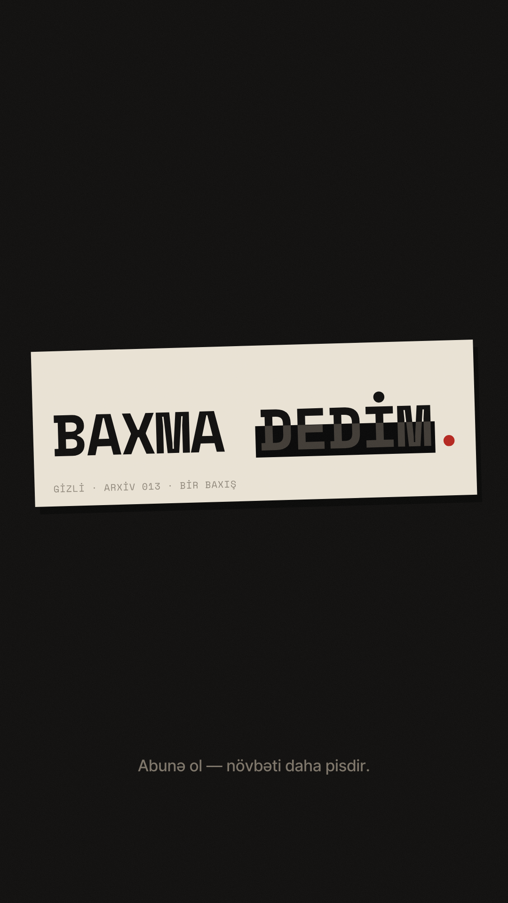
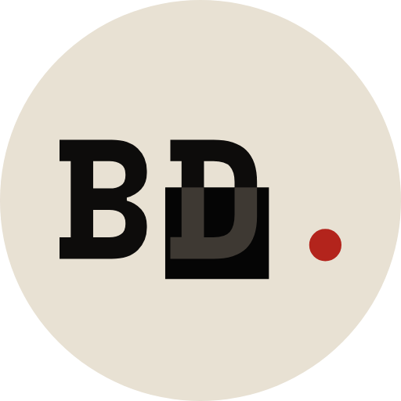
A black bar slides over DEDİM. but doesn't quite hide it, leaving only the red period, like a file you were allowed to glimpse for one second.
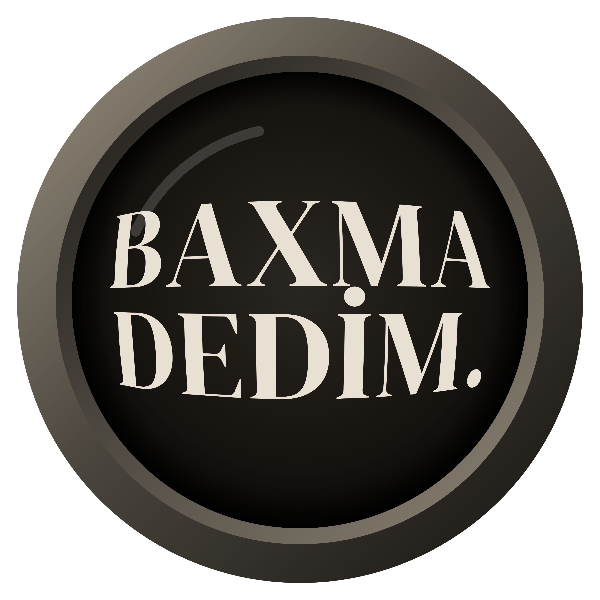
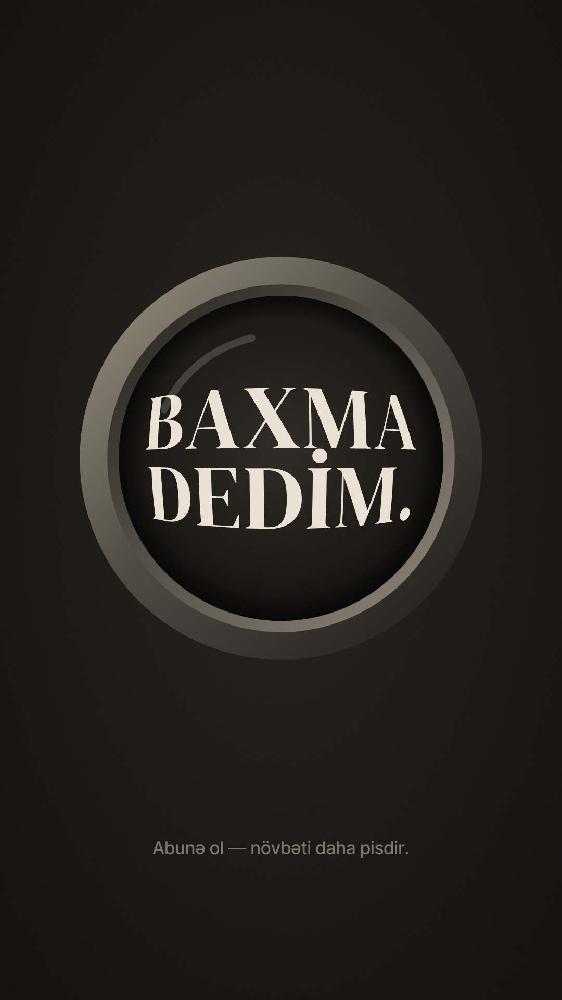
The name is seen through a door viewer's fisheye lens, so reading the logo means doing exactly what it tells you not to: looking.